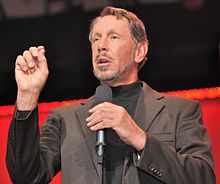

Lawrence Joseph "Larry" Ellison (born August 17, 1944) is an American
businessman, entrepreneur, and philanthropist who is co-founder of Oracle
Corporation and was CEO from its founding until September 2014. He currently
serves as executive chairman and chief technology officer of Oracle. In 2014, he
was listed by Forbes magazine as the third-wealthiest person in America and as
the fifth-wealthiest person in the world, with a fortune of US$56.2 billion.
Ellison was born in New York City but grew up in Chicago. He studied at the
University of Illinois at Urbana–Champaign and the University of Chicago without
graduating before moving to California in 1966.
While working at Ampex in the
early 1970s, he became influenced by Edgar F. Codd's research on relational
database design, which led in 1977 to the formation of what became Oracle.
Oracle became a successful database vendor to mid- and low-range systems,
competing with Sybase and Microsoft SQL Server, which led to Ellison being
listed by Forbes as one of the richest men in the world.
Ellison has donated up to 1% of his wealth to charity and has signed The Giving
Pledge.
In addition to his work at Oracle, Ellison has had success in yachting,
through Oracle Team USA. He is a licensed aircraft pilot who owns two military
jets.
Larry Ellison was born in New York City, to an unwed Jewish mother.His
biological father was an Italian American United States Army Air Corps pilot.
After Ellison contracted pneumonia at the age of nine months, his mother gave
him to her aunt and uncle for adoption. He did not meet his biological mother
again until he was 48.
Ellison moved to Chicago's South Shore, a middle-class neighborhood. He
remembers his adoptive mother as warm and loving, in contrast to his austere,
unsupportive, and often distant adoptive father, who adopted the name Ellison to
honor his point of entry into the United States, Ellis Island.
Louis Ellison was
a government employee who had made a small fortune in Chicago real estate, only
to lose it during the Great Depression.
Although Ellison was raised in a Reform Jewish home by his adoptive parents, who
attended synagogue regularly, he remained a religious skeptic. Ellison states:
"While I think I am religious in one sense, the particular dogmas of Judaism are
not dogmas I subscribe to.
I don't believe that they are real. They're
interesting stories. They're interesting mythology, and I certainly respect
people who believe these are literally true, but I don't. I see no evidence for
this stuff." At age thirteen, Ellison refused to have a bar mitzvah celebration.
Ellison says that his love affair with Israel is not connected to religious
sentiments, but rather due to the innovative spirit of Israelis in the
technology sector.
Ellison left the University of Illinois at Urbana–Champaign after his second
year, not taking his final exams, because his adoptive mother had just died.
After spending a summer in Northern California, he attended the University of
Chicago for one term, where he first encountered computer design. In 1966, aged
22, he moved to Northern California.